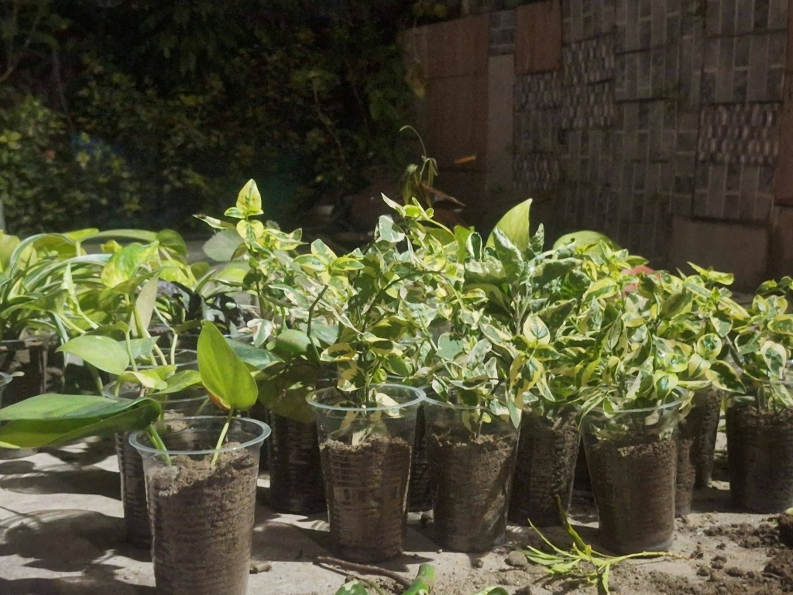
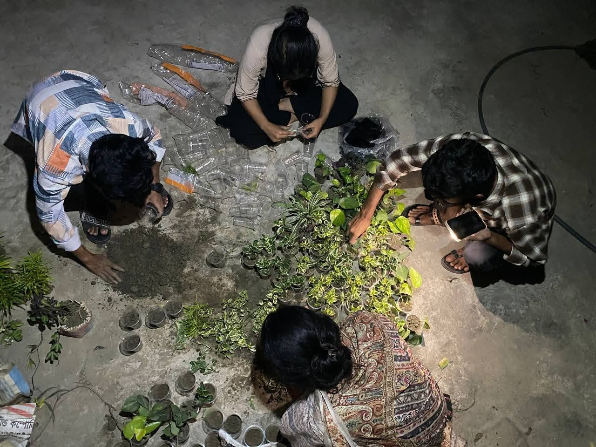

পুনর্ব্যবহৃত কাপ নার্সারি উদ্যোগ
ঢাকার স্থানীয় চায়ের দোকানগুলো থেকে প্রতিদিন বিপুল পরিমাণে ওয়ান-টাইম প্লাস্টিক কাপ নর্দমা ও জলাশয়ে ফেলা হয়। আমরা সেই কাপগুলো স্বেচ্ছাশ্রমে সংগ্রহ করি, পরিষ্কার ও জীবাণুমুক্ত করি এবং নিচে ছোট ছিদ্র করে মাটির মিশ্রণ প্রস্তুত করি।


সন্ধ্যার চারা রোপণ ও কাটিং ক্যাম্প
দিনের কর্মব্যস্ততা শেষে পূর্ব জুরাইন নূরানী মসজিদ প্রাঙ্গণে সমবেত হন শিক্ষার্থী ও স্থানীয় তরুণরা। খোলা আকাশের নিচে বা আলোর নিচে গান ও আড্ডার সাথে চলে মাটির সাথে হাত মেলানো—কাটিং প্রস্তুত, কম্পোস্ট মিশ্রণ ও টবে চারা স্থাপন।
দেশি বীজ ব্যাংক ও বৈচিত্র্য রক্ষা
বহুজাতিক হাইব্রিড বীজের কারণে আমাদের ঐতিহ্যবাহী দেশীয় ফসলের জাত আজ বিলুপ্তির পথে। জুরাইন গ্রিন ব্যাংক দেশের বিভিন্ন অঞ্চল থেকে দেশি শিম, লাউ, সরিষা, তিল ও শাকসবজির খাঁটি বীজ সংগ্রহ ও বিনামূল্যে কৃষকদের মধ্যে বিতরণ করে।

কর্মসূচি ০৪: বায়োচার ও জীবন্ত মাটি কর্মশালা
ফসলের উচ্ছিষ্ট ডালপালা ও কাঠের গুঁড়া কম অক্সিজেনে পুড়িয়ে আমরা তৈরি করি স্থায়ী কার্বন স্পঞ্জ বা বায়োচার। এটি মাটির ভেতর উপকারী ব্যাকটেরিয়াকে বাসা বানাতে সাহায্য করে ও পানির অপচয় রোধ করে।
কর্মসূচি ০৫: ছাদবাগান ও নগর সবুজায়ন সহায়তা
যাঁরা ছাদবাগান করতে চান কিন্তু মাটির মিশ্রণ বা ওজনের ভারসাম্য বুঝতে পারছেন না, আমাদের ভলান্টিয়ার টিম তাঁদের বাড়িতে গিয়ে হালকা জৈব মাটির সংমিশ্রণ ও ড্রেনেজ সিস্টেম তৈরিতে সরাসরি সহায়তা প্রদান করে।